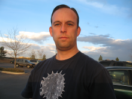
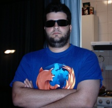
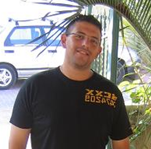
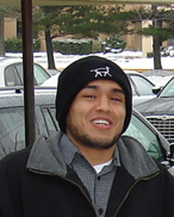
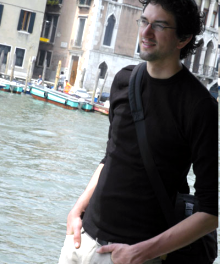

Castle Team
As any meritocracy you might be invited to join the team after a demonstration of commitment, technical skills and good judgement. This is mostly measured based on you participation on the mailing lists and on the forum.
The Castle Project is made of the following roles:
- Committer: have access to the code repository and has binding votes
- PMC Chair: leads the PMC
- PMC Members: vote new committers, oversee the project goals in mid to long terms
- Patch Manager: guarantees that submitted patches will not be forgotten
- Documentation Manager: enforces standards on the documentation
The following is the list of people involved with the Castle Project ordered by the inclusion date.
Hamilton Verissimo de Oliveira (bka hammett) Enjoys writing code and fostering healthy communities. Technical Blog and personal blog (in portuguese). Location: Sao Paulo/Brazil Roles:
| |
Henry Conceicao Location: Sao Paulo/Brazil Roles:
| |
|  | Kevin Williams An aging, self-taught hacker in a never-ending search for better ways to build software. Blog. Location: Denver, Colorado Roles:
|
Craig Neuwirt Location: Roles:
| |
Gilles Bayon Location: Roles:
| |
Andrew Hallock Location: Roles:
| |
Jason Nelson Location: Roles:
| |
Dru Sellers A simple programmer trying to wrap his head around the MicroKernel. Location: Roles:
| |
John Morales Location: Roles:
| |
Dan Location: Roles:
| |
Tatham Oddie Tatham likes to call himself a Digital Concept Consultant with a venture focus... In simpler terms, this basically means he's trying to reinvent the dot com boom. Why - because preschool commitments such as finger painting distracted him during the last one. Location: Sydney, Australia Roles:
| |
|  | Fabio Batista Professional developer, specially focused on architecture planning for information systems. Currently co-owner of Suprifattus, a small software development company located in Brazil. Personal blog (in portuguese) Location: Rio Grande do Sul, Brazil Roles:
|
Chad Humphries Location: Roles:
| |
|  | Ayende Rahien Seeking the perfect design, so he could take it apart. Location: Roles:
|
G. Richard Bellamy Location: Roles:
| |
Roelof Blom Location: Roles:
| |
|  | Ahmed Ghandour Location: Maryland, USA Roles:
|
Josh Robb Location: Roles:
| |
|  | Ernst Naezer Always looking for creative solutions and when not writing code he is holding a camera. Enjoys abandoned places: photography Location: Delft, The Netherlands Roles:
|
Marc-Andre Cournoyer Location: Roles:
| |
Fabian Schmied Location: Roles:
| |
Dave Godfrey Location: Roles:
| |
Markus Zywitza Location: Roles:
|
Emeritus
What Emeritus means: a term used to formally designate someone as no longer active, but still entitled to all of the rights and privileges of the position. For example, an ASF member who hasn't attended any membership meetings for a long time is declared emeritus; someone who no longer has time to work on a particular project may declare itself emeritus. Emeritus status indicates interest but not activity, as opposed to having resigned.
- Dan
- Gilles Bayon
- Andrew Hallock
- John Morales
- CobraLord
Generated by Castle Anakia.
Sponsored by  Castle Stronghold.
Castle Stronghold.